What to say — slide 1: What to say: Hello everyone. I'm Mohamed Nadoui, and this is Mohamed Amine El Mabchour's and my project: WatchHub, a website where you keep one watchlist for movies, series and anime, and log in to pick it up on any device.
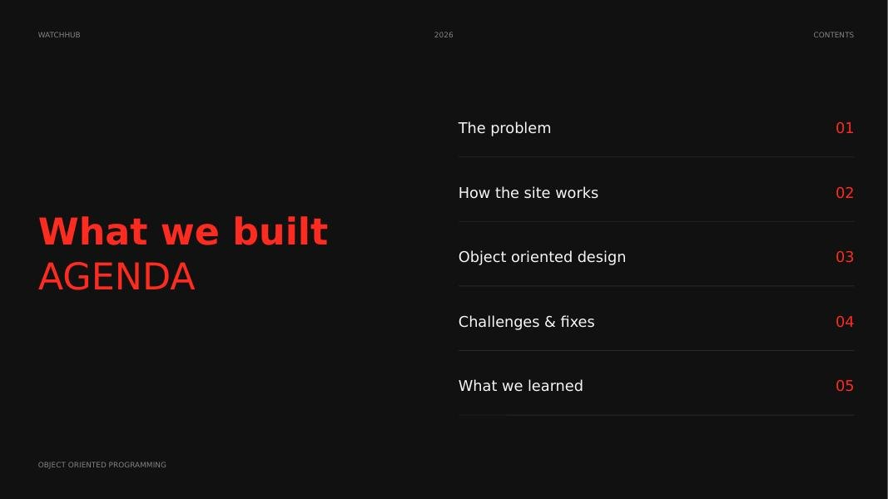
What to say — slide 2: What to say: Here's how I'll present it: first the problem, then how the site works, then the code, then the bugs we hit, and finally what we learned.
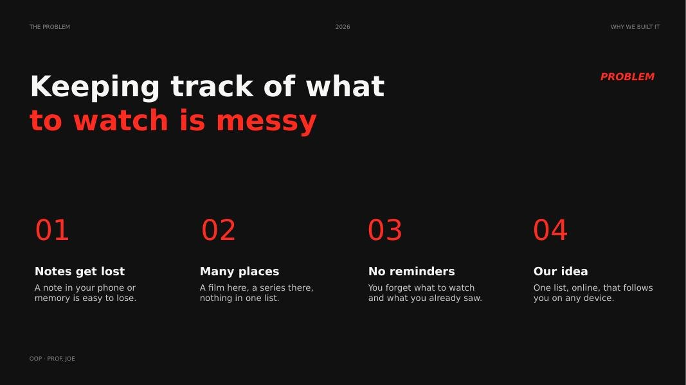
What to say — slide 3: What to say: This is why we built it. Writing shows in your phone's notes app is messy. So we asked: why not one clean list, online, that follows you?
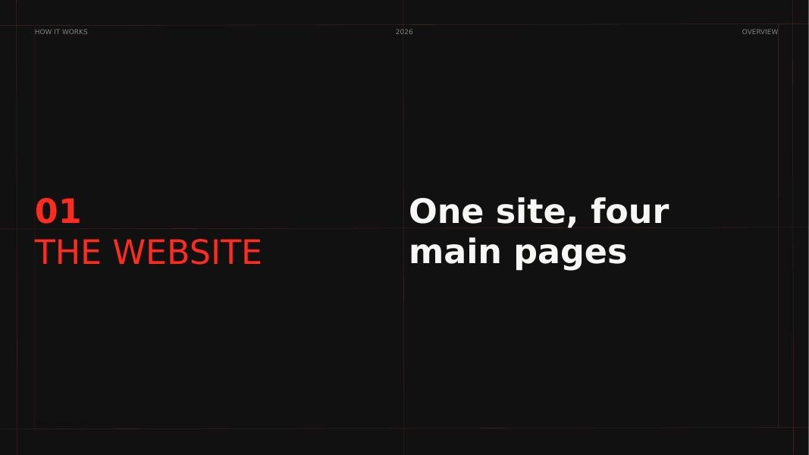
What to say — slide 4: What to say: Let's look at the three parts of the site: browsing, your account, and your personal watchlist.
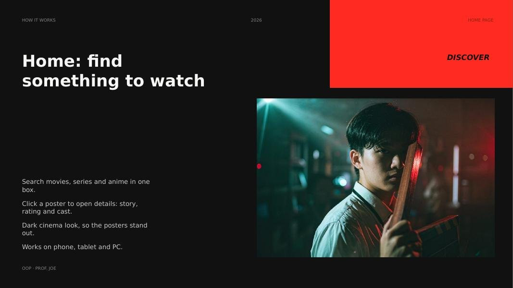
What to say — slide 5: What to say: The home page. You can search, filter by popularity and year, and click a title to see its details. It's dark because you watch films in the dark, and it works on any screen.
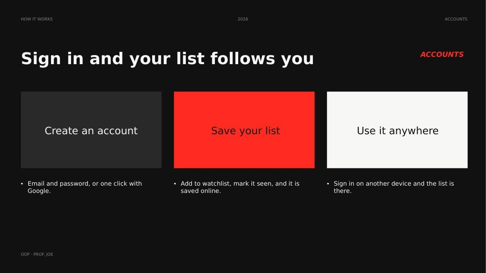
What to say — slide 6: What to say: Accounts. Create one with your email, or use Google. Your watchlist is saved to your account, so it follows you to any device.
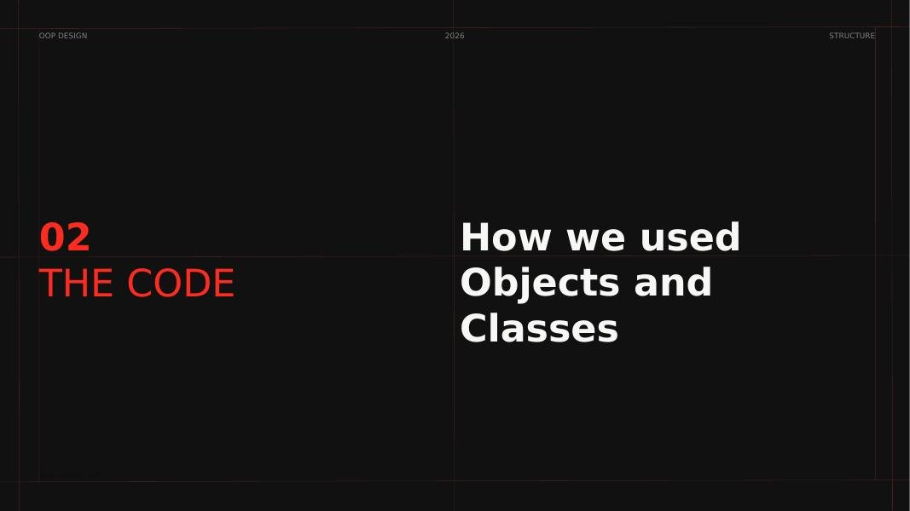
What to say — slide 7: What to say: Now the code. This is an Object Oriented Programming project, so I'll show you the classes we designed.
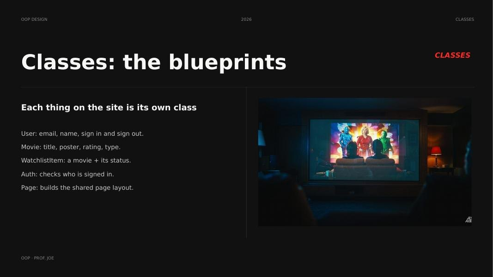
What to say — slide 8: What to say: Each thing in the site is an object. A User, a Movie, a WatchlistItem. Each class holds its own data and its own functions, so the code stays organised.
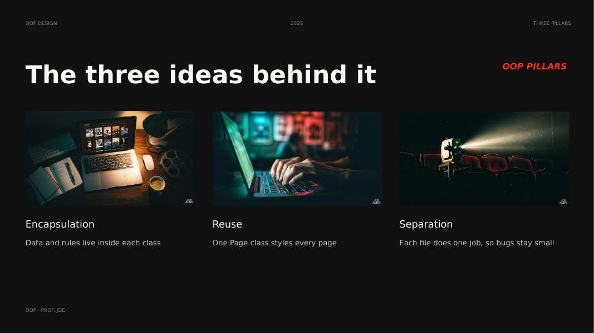
What to say — slide 9: What to say: The three OOP ideas we used: encapsulation, reuse, and separation. Instead of one giant file, every class does one job.
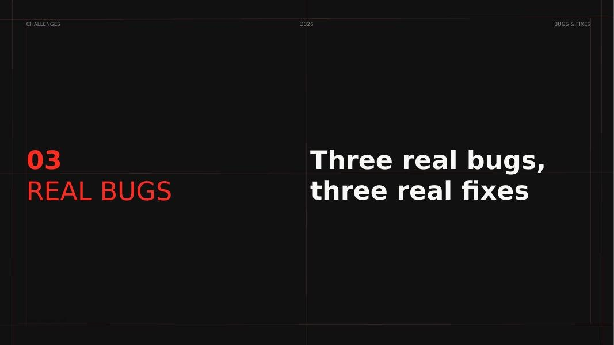
What to say — slide 10: What to say: This is the part I'm most proud of. We hit three real bugs while building, and fixing them taught us more than the easy parts did.
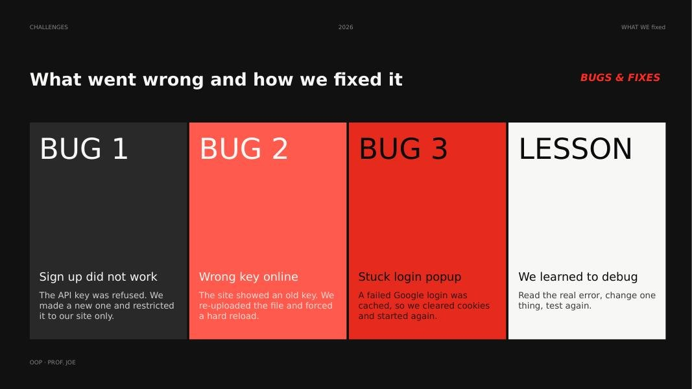
What to say — slide 11: What to say: Bug one was an API key error. Bug two, Google sign-in worked in our editor but not in Chrome. Bug three, the page wouldn't update. Each fix taught us something new.
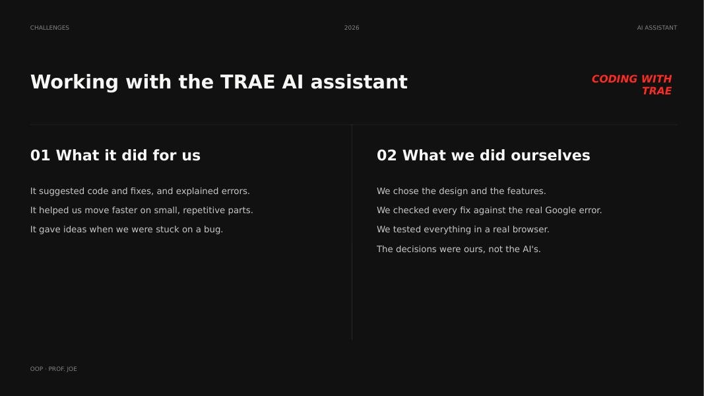
What to say — slide 12: TRAE suggested code and fixes; we tested every fix and made the calls.
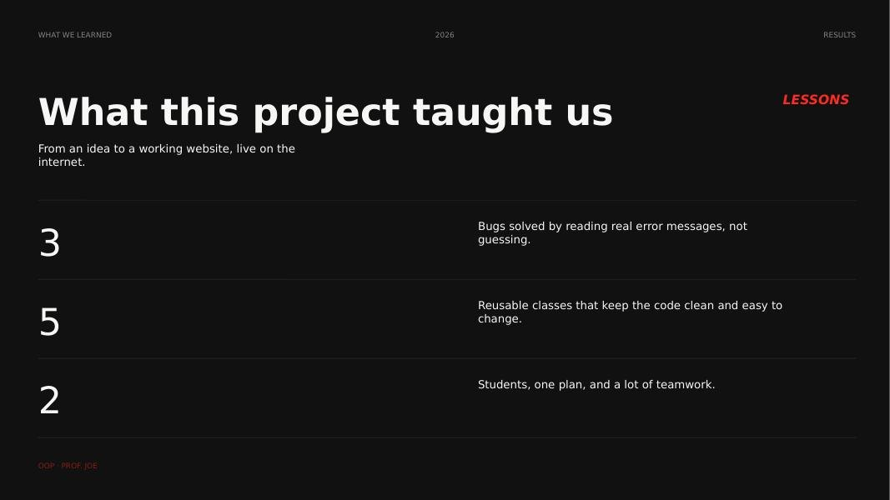
What to say — slide 13: We learned why bugs teach the most, why classes matter, and how two people build together.
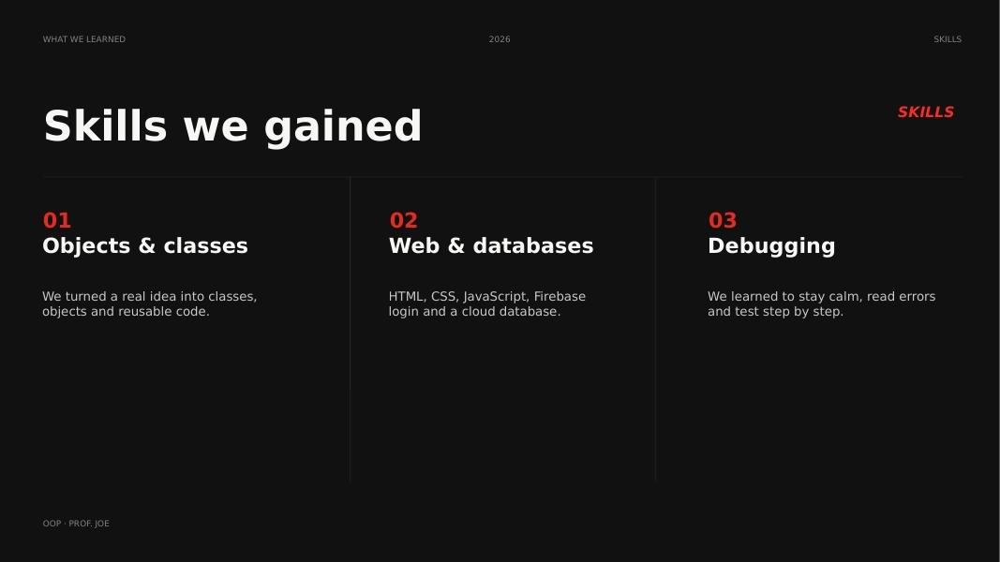
What to say — slide 14: Objects, web and databases, and debugging: three skills to take forward.
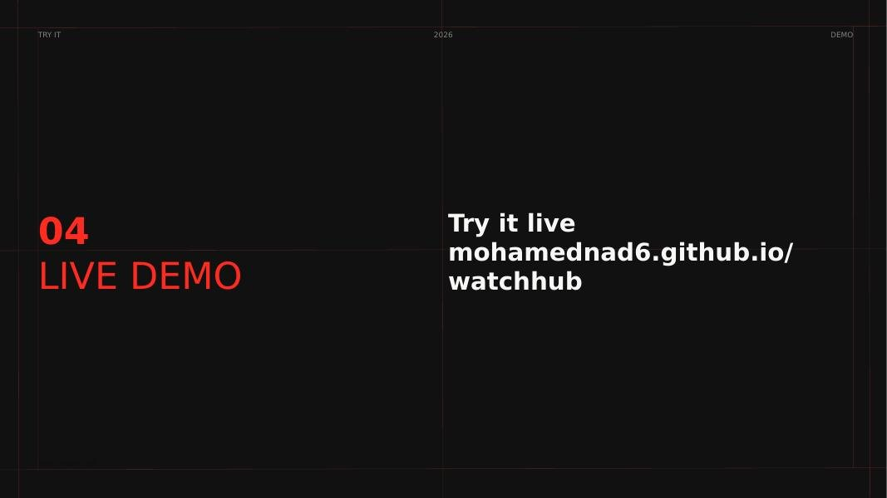
What to say — slide 15: Here's the site live, on GitHub Pages.
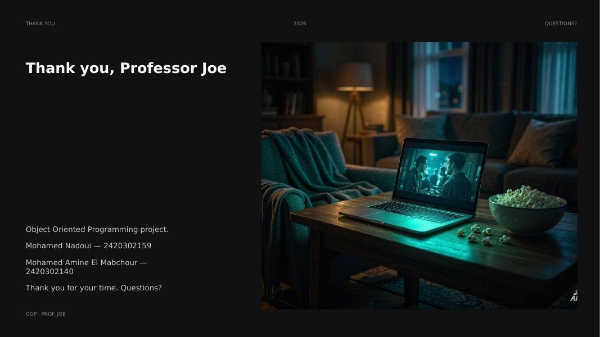
What to say — slide 16: Thank you. Mohamed Nadoui and Mohamed Amine El Mabchour, Object Oriented Programming with Prof. Joe.
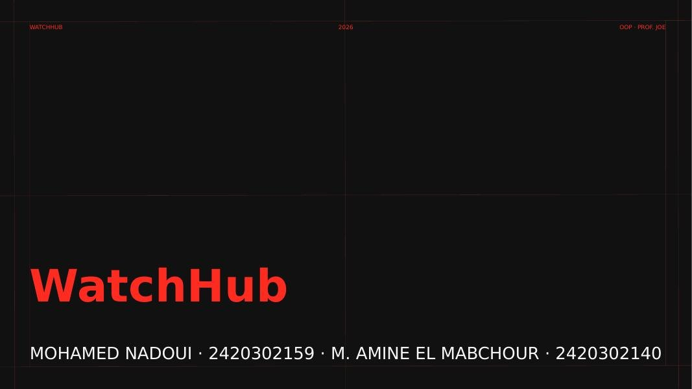
What to say — slide 17: Questions? Try it yourself: mohamednad6.github.io/watchhub